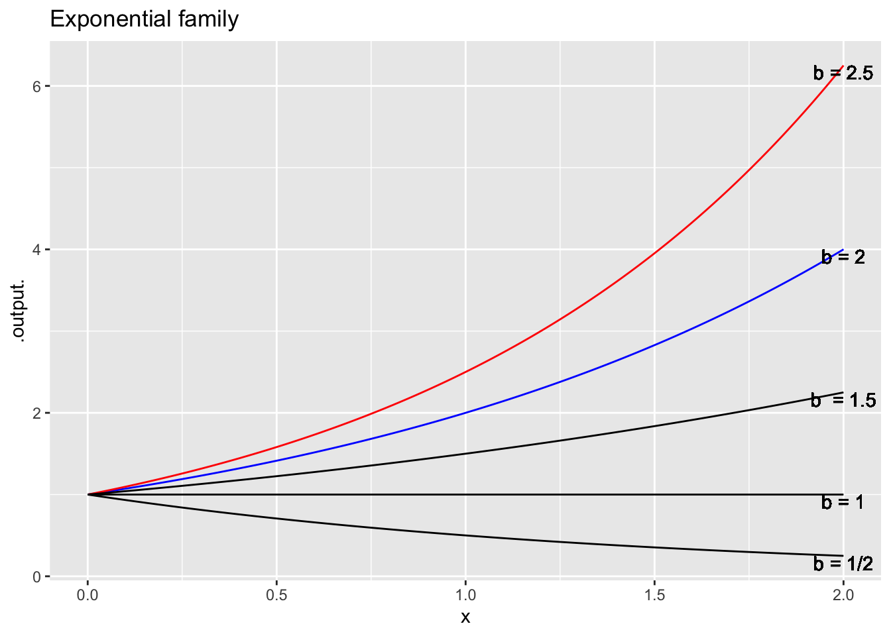
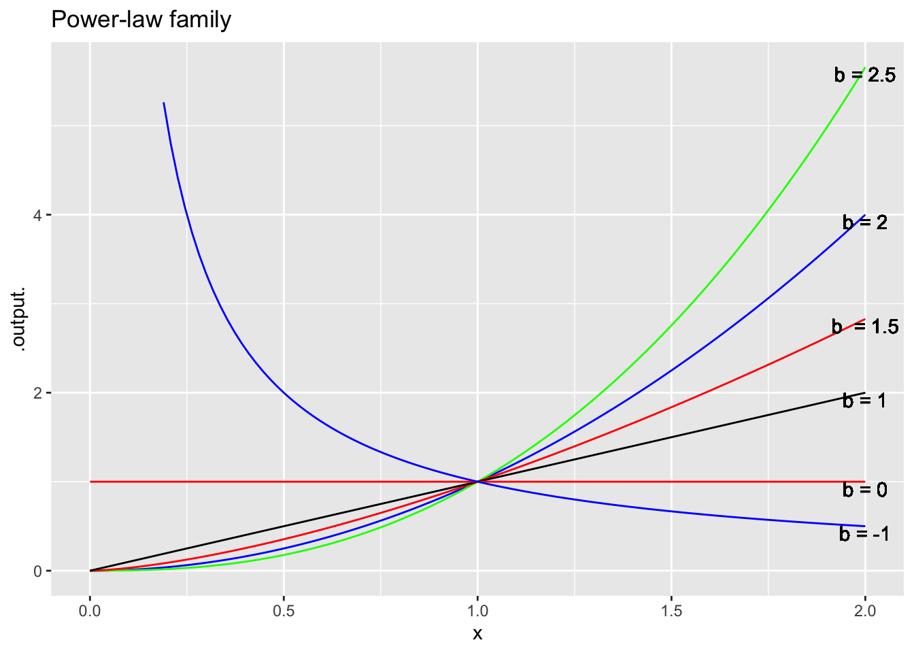
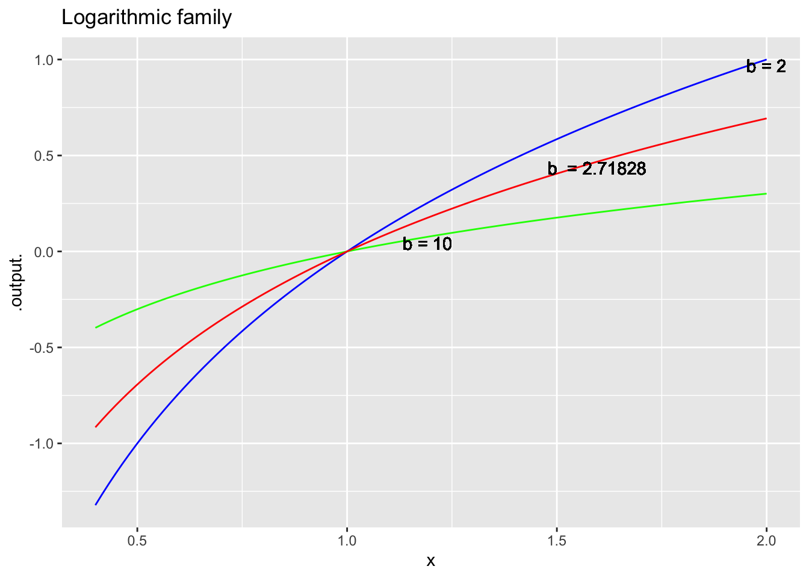
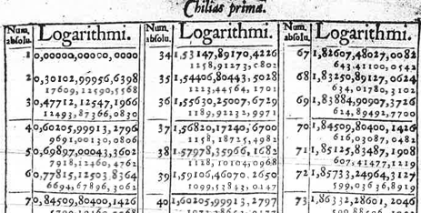
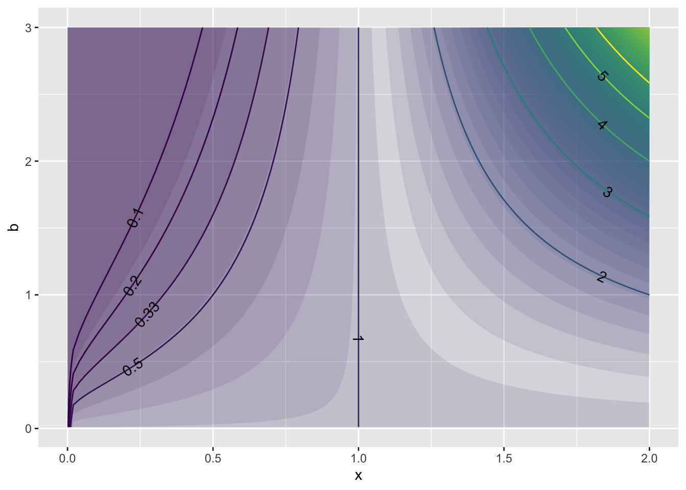
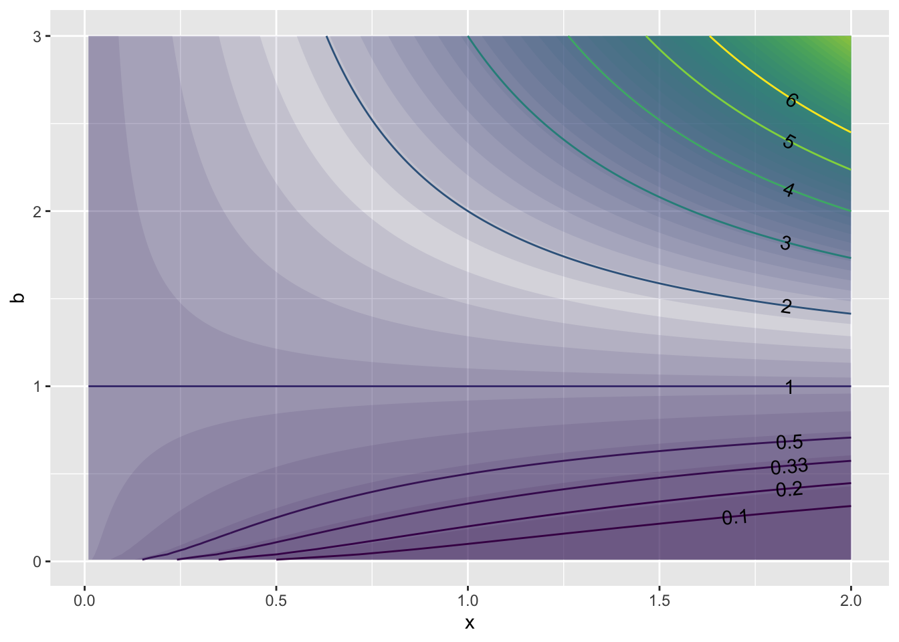

Throughout modeling you will hear about functions, arguments, inputs, and parameters. The distinction between arguments, inputs and parameters is a matter of perspective: what you are going to be doing with the function. Until you know some of the uses to which functions will be put, it’s hard to make a clear distinction among the three. Indeed, it’s not unreasonable to think of them all as the same thing: different names for the inputs to which you apply a function.
Typically when we construct models we are trying to match a pattern in a relationship. With experience, one comes to realize that there are some very common forms of relationship and we learn what kind of function is most suitable for matching the form of the relationship. For example, “unacquainted,” “dating,” “married,” “divorced,” and “widowed” are stereotypical forms of relationship between two people. Each form of relationship comes with certain expectations about how the relationship works (or doesn’t). Human relationships are so rich that there can be overlap between types of relationship: some marriages are much like dating, some like divorced or even unacquainted. But there are also differences. For instance, often married couples share all finances, but dating or divorced couples typically do not.
A parameter is a quantity that points to a specific form of relationship rather than a general category. Again, human relationships are very rich, so we’ll oversimplify and stereotype. Let’s imagine that the parameter for functions describing human relationships is \(b\), the number of years that the couple has been in the relationship. Knowing that a couple has been married for 0.1 year gives you quite a different picture than that of a couple who have been married for 10 years, 30 years, or 50 years. Similarly, dating relationships with a parameter of \(b =\) 0.1 year are very different than those with a parameter of 1 year or of 10 years. The same is true for divorced couples.
In personal affairs, the relationship tells you about the kind of things the people do or don’t do together. In mathematical functions, the relation is between an input and an output; knowing the input you can figure out the output. Different function forms–sine wave, straight line, exponential, logarithm–correspond more or less to the qualitative differences in kinds of relationship, what we might call the “shape” of the relationship.
The parameters of mathematical functions take the general kind of shape and allow it to be matched in detail to a particular situation.
Often, a different metaphor is used to explain the role and uses of parameters. If we think of an individual function as a person, we can imaging “families” of functions. The members of each family all have some broad traits in common. But each member has it’s own distinctive identity. Within a family of people, we distinguish individuals by their first name. Within a family of functions, we distinguish individuals by parameters.
My goal here is to introduce three families of functions and some individual members of the families of particular prominence.
The three families are: Exponential, Logarithmic, Power-law.
I think that computer notation is better at giving names to the functions and in making it clear how the members of any one family are related to one another. Each of these functions has a single input, which traditionally but arbitrarily we call \(x\) and a single parameter which I’ll call b. Again, think of the parameter as the “first name” of the function; a way to point to any individual member of the family.
Here they are:
exponential <- function(x, b) { b^x }, that is, b raised to the power of x.power_law <- function(x, b) { x^b }logarithm <- function(x, b) { ???? }Let’s look at some family portraits of these functions. A family portrait typically involves multiple members of a family. For very large families–these function families have an infinite number of members: all the different possible values of b–portraits show only a few of the family members.



A person glancing at these families might be tempted to say that they are all pretty much the same: the graphs are curves. This is true, just as it’s true that within and across human families people are people. But look more carefully and you’ll see that within a family, all the functions have things in common. For instance, within each of these three families, all the members either curve up or curve down. And within the families, all the members have identical outputs for a particular input, whether that be \(x=0\) (the exponential family) or \(x=1\) (the power-law and logarithmic families).
You probably noticed that in the computer-form definition for the exponential and power-law functions a specific formula was given to calculate the output from the input. Or, to be more precise, you learned a specific mathematical notation involving superscripts to describe the function, although you probably can translate this to arithmetic only when the quantity in the superscript is an integer.
Logarithms are different. The logarithmic function was invented by John Napier (1550-1617) and popularized as a means to perform calculations by Henry Briggs (1561-1630). Napier made up the word “logarithm.” You can see in it the start of the word “arithmetic” and the start of the Greek word λόγος (logos), which is related to the English word “logic.”
In today’s language, we say that the logarithm is the inverse function to exponentiation. All we need to do is find the value of the exponential function for some input x and parameter b, for instance
\[100 = 10^2\ \ \ \mbox{that is,}\ \ b^x\ \ \mbox{for}\ \ \ b = 10\ \ \mbox{and}\ \ x = 2\]
This tells us that logarithm(100, 10) 2. This one fact isn’t much use unless we happen to want the logarithm of 100. But the ability to calculate exponentiation means that we can carry out a search for the logarithm of whatever input we want. We need to start with two guesses, one that is too high and one that is too low. “Too high” means that \(b^{guess} > x\) and too low means that \(b ^ {guess} < x\). This is called a bracket. Then, we try a new guess, in the middle and see if that is too high or too low. If too high, we use the new guess to replace the old high guess. If too low, we use the new guess to replace the old low guess. Then we repeat the process. Each time the new bracket is half as large as the previous bracket. After many cycles–we call these “iterations”–the bracket is so small that the too-high guess and the too-low guess are practically the same. That means we’ve arrived at the answer.
This is a description of an algorithm in words and there’s not a purely algebraic notation that expresses it. But computer programming languages were developed to express algorithms, so here is a definition that could be used to replace the ???? in the description above.
logarithm <- function(x, b = 10) {
bottom = -1000 # too low!
top = 1000 # too high!
for (iters in 1:50) { # repeat 50 times
middle <- (top + bottom) / 2
if (b ^ middle > x) top <- middle
else bottom <- middle
}
middle
}Such algorithms rely on the ability of computers rapidly to carry out masses of arithmetic. Technological developments within living memory made this possible, particularly transistors and integrated circuits.
In order to produce a table of logarithms to support high precision calculation in the 1600s, Henry Briggs had to calculate, check, typeset, and print roughly 200,000 digits. By hand. This massive effort was undertaken to provide a means to speed up other calculations that were important to the day for finance, navigation, astronomy and such. To honor this heroic effort, here is a small part of Brigg’s table of logarithms, published in 1617.

Parameter formulations that allow us to “see” which member best applies to a given situation.
You might be disappointed that no formula is given for the logarithm function. We know about the logarithm only in terms of the way it is related to the exponential and power-law families of functions. Indeed, it was not identified as a particular family of functions and given a name until 1600.
Actually, there is an arithmetic process–that is, one involving just multiplication, division, addition, and subtraction–for calculating exponential and power-law functions and even then only when the quantity to the right of ^ is an integer: \(0, \pm 1, \pm 2, \ldots\).
Some nomenclature and notation … the words often given to signify the quantity to the right of ^ are “power” or “exponent.” What’s written in computer notation as b^x is written in classical mathematical notation as a superscript: \(b^x\).
From antiquity, people have known how to extend the calculations of exponential and power-law function from integers in the subscript to the reciprocals of integers: $ , , , , $. The process involves some arithmetic, but it also involves comparing, branching, and iterating. (These are common-sense operations, but not arithmetic ones.) Computer languages offer arguably the best notation for these operations.
As regards the logarithm function, it was given a name only around 1600 when methods involving comparing, branching, and iterating were developed to perform the calculation for any x and b.
Over the centuries, there have been many different motivations behind the particular functions introduced in the calculus story, many of them relating to the calculation of exact values for mysterious mathematical expressions. For instance, consider this one ublished by Leonhard Euler in 1755 for which I know absolutely no practical use:
\[1^{-26} + 2^{-26} + 3^{-26} + 4^{-26} + \cdots = \frac{1315862}{11094481976030578125} \pi^{26}\]

Or, as a contour plot:

We will be interested in practical applications
Our purpose in learning calculus